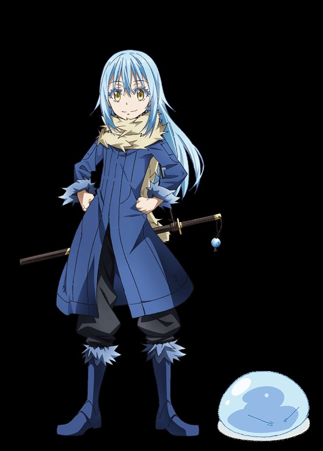

転スラ 正式名称：転生したらスライムだった件
作者：伏瀬氏
あらすじ：何という事もない人生を送っていた三上悟は、通り魔に刺され３７年の人生に幕を閉じた……はずだった。
ふと気がつくと、目も見えなければ、耳も聞こえない……。
そんな状況の中、自分があの“スライム”に転生してしまった事に気づく。
最弱と名高いモンスターである事に不満を感じつつも、お気楽スライムライフを満喫する三上悟だったが、
天災級のモンスター“暴風竜ヴェルドラ”と出会ったことで運命は大きく動き出す――。
ヴェルドラに“リムル”と名付けてもらい、スライムとして新たな異世界生活をスタートさせた矢先、
ゴブリンと牙狼族との争いに巻き込まれ、いつしかモンスターたちの主として君臨することに……。
相手の能力を奪う『捕食者』と世界の理を知る『大賢者』、二つのユニークスキルを武器に最強のスライム伝説が今始まる！
(小説版 転生したらスライムだった件 第1巻より)


小説
漫画
アニメ
メイン人物

リムル＝テンペスト
ヴェルドラ＝テンペスト
嵐牙(ランガ)
シズ
リムル＝テンペスト
ヴェルドラ＝テンペスト
嵐牙(ランガ)
シズ